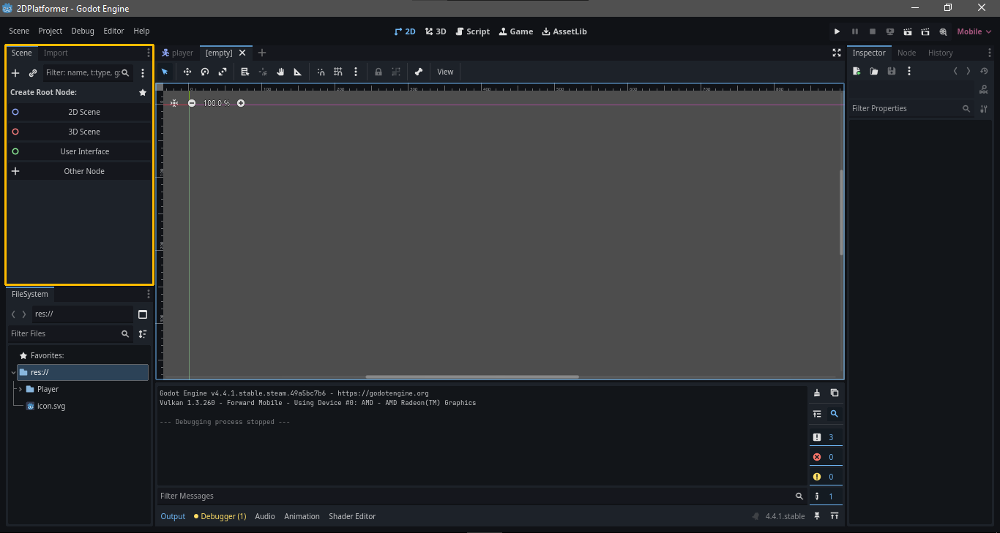

Creando nuestro proyecto en Godot
En este tutorial, veremos lo basico de...
print("hola Mundo!!")
Nuestro personaje
Godot funciona a partir de un arbol de escenas y nodos. Una escena esta constituida por multiples nodos, y un nodo individual puede ser muchas cosas, como un bloque de texto, una textura o una pista de audio. Podemos ver las escenas como una construccion, y los nodos como los ladrillos de esta. Para añadir nodos a nuestra escena, tendremos que buscar en el apartado superior izquierdo del editor.

Nuestro personaje sera un nodo de tipo CharacterBody2D , para añadirlo a la escena, tendremos que seleccionar cualquiera de los dos botones subrayados (+, "Other Node"), y luego buscaremos CharacterBody2D


extends CharacterBody2D
var rapidez = 100;
func _physics_process(delta: float) -> void:
#Recibir input de jugador
velocity.x = 0
if Input.is_action_pressed("izquierda"):
velocity.x += rapidez
if Input.is_action_pressed("derecha"):
velocity.x -= rapidez
move_and_slide()